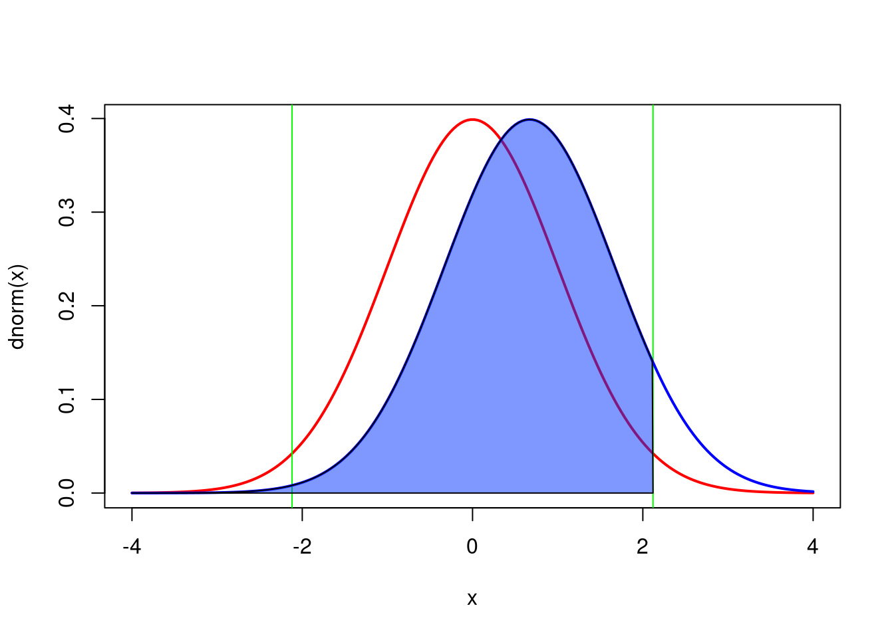

2 Power Analysis with R and G*Power
After completing this laboratory, you should :
- be able to compute the power of a t-test with G*Power and R
- be able to calculate the required sample size to achieve a desired power level with a t-test
- be able to calculate the detectable effect size by a t-test given the sample size, the power and \(\alpha\)
- understand how power changes when sample size increases, the effect size changes, or when \(\alpha\) decreases
- understand how power is affected when you change from a two-tailed to a one-tailed test.
2.1 The theory
2.1.1 What is power?
Power is the probability of rejecting the null hypothesis when it is false
2.1.2 Why do a power analysis?
Assess the strength of evidence
Power analysis, performed after accepting a null hypothesis, can help assess the probability of rejecting the null if it were false, and if the magnitude of the effect was equal to that observed (or to any other given magnitude). This type of a posteriori analysis is very common.
Design better experiments
Power analysis, performed prior to conducting an experiment (but most often after a preliminary experiment), can be used to determine the number of observations required to detect an effect of a given magnitude with some probability (the power). This type of a priori experiment should be more common.
Estimate minimum detectable effect
Sampling effort is often predetermined (when you are handed data of an experiment already completed), or extremely constrained (when logistics dictates what can be done). Whether it is a priori or a posteriori, power analysis can help you estimate, for a fixed sample size and a given power, what is the minimum effect size that can be detected.
2.1.3 Factors affecting power
For a given statistical test, there are 3 factors that affect power.
Decision criteria
Power is related to \(\alpha\), the probability level at which one rejects the null hypothesis. If this decision criteria is made very strict (i.e. if critical \(\alpha\) is set to a very low value, like 0.1% or \(p = 0.001\)), then power will be lower than if the critical \(\alpha\) was less strict.
Sample size
The larger the sample size, the larger the power. As sample size increases, one’s ability to detect small effect sizes as being statistically significant gets better.
Effect size
The larger the effect size, the larger the power. For a given sample size, the ability to detect an effect as being significant is higher for large effects than for small ones. Effect size measures how false the null hypothesis is.
2.2 What is G*Power?
G*Power is free software developed by quantitative psychologists from the University of Dusseldorf in Germany. It is available in MacOS and Windows versions. It can be run under Linux using Wine or a virtual machine.
G*Power will allow you to do power analyses for the majority of statistical tests we will cover during the term without making lengthy calculations and looking up long tables and figures of power curves. It is a really useful tool that you need to master.
It is possible to perform all analysis made by G*Power in R, but it requires a bit more code, and a better understanding of the process since everything should be coded by hand. In simple cases, R code is also provided.
Exercise
Download the software here and install it on your computer and your workstation (if it is not there already).
2.3 How to use G*Power
2.3.1 General Principle
Using G*Power generally involves 3 steps:
- Choosing the appropriate test
- Choosing one of the 5 types of available power analyses
- Enter parameter values and press the Calculate button
2.3.2 Types of power analyses
First, \(\alpha\) is define as the probability level at which one rejects the null hypothesis, and \(\beta\) is \(1 - power\).
A priori
Computes the sample size required given \(\beta\), \(\alpha\), and the effect size. This type of analysis is useful when planning experiments.
Compromise
Computes \(\alpha\) and \(\beta\) for a given \(\alpha\)/\(\beta\) ratio, sample size, and effect size. Less commonly used (I have never used it myself) although it can be useful when the \(\alpha\)/\(\beta\) ratio has meaning, for example when the cost of type I and type II errors can be quantified.
Criterion
Computes \(\alpha\) for a given \(\beta\), sample size, and effect size. In practice, I see little interest in this. Let me know if you see something I don’t!
Post-hoc
Computes the power for a given \(\alpha\), effect size, and sample size. Used frequently to help in the interpretation of a test that is not statistically significant, but only if an effect size that is biologically significant is used (and not the observed effect size). Not relevant when the test is significant.
Sensitivity
Computes the detectable effect size for a given \(\beta\) ,\(\alpha\), and sample size. Very useful at the planning stage of an experiment.
2.3.3 How to calculate effect size
G*Power can perform power analyses for several statistical tests. The metric for effect size depends on the test. Note that other software packages often use different effect size metrics and that it is important to use the correct one for each package. GPower has an effect size calculator for many tests that only requires you to enter the relevant values. The following table lists the effect size metrics used by GPower for the various tests.
| Test | Taille d’effet | Formule |
|---|---|---|
| t-test on means | d | \(d = \frac{|\mu_1 - \mu_2|}{\sqrt{({s_1}^2 + {s_2}^2)/2}}\) |
| t-test on correlations | r | |
| other t-tests | d | \(d = \frac{\mu}{\sigma}\) |
| F-test (ANOVA) | f | \(f = \frac{\frac{\sqrt{\sum_{i=1}^k (\mu_i - \mu)^2}}{k}}{\sigma}\) |
| other F-tests | \(f^2\) | \(f^2 = \frac{{R_p}^2}{1-{R_p}^2}\) |
| \({R_p}\) is the squared partial correlation coefficient | ||
| Chi-square test | w | \(w = \sqrt{ \sum_{i=1}^m \frac{(p_{0i} - p_{1i})^2 }{ p_{0i}} }\) |
| \(p_{0i}\) and \(p_{1i}\) are theporportion in category \(i\) predicted by the null, \(_0\), and alternative, \(_1\), hypothesis |
2.4 Power analysis for a t-test on two independent means
All the power analysis presented in this chapter can be done using 2 functions in R.
-
pwr.t.test()when the two samples have a similar size -
pwr.t2n.test()when samples have different numbers of observations
The objective of this lab is to learn to use G*Power and understand how the 4 parameters of power analyses (\(\alpha\), \(\beta\), sample size and effect size) are related to each other. For this, you will only use the standard t-test to compare two independent means. This is the test most used by biologists, you have all used it, and it will serve admirably for this lab. What you will learn today will be applicable to all other power analyses.
Jaynie Stephenson studied the productivity of streams in the Ottawa region. She has measured fish biomass in 36 streams, 18 on the Shield and 18 in the Ottawa Valley. She found that fish biomass was lower in streams from the valley (2.64 \(g/m^2\) , standard deviation = 3.28) than from the Shield (3.31 \(g/m^2\) , standard deviation = 2.79.).
When she tested the null hypothesis that fish biomass is the same in the two regions by a t-test, she obtained:
Pooled-Variance Two-Sample t-Test
t = -0.5746, df = 34, p-value = 0.5693She therefore accepted the null hypothesis (since p is much larger than 0.05) and concluded that fish biomass is the same in the two regions.
2.4.1 Post-hoc analysis
Using the observed means and standard deviations, we can use G*Power to calculate the power of the two-tailed t-test for two independent means, using the observed effect size (the difference between the two means, weighted by the standard deviations) for \(\alpha\) = 0.05.
Start G*Power.
- In *Test family , choose: t tests
- For Statistical test , choose: Means: Difference between two independent means (two groups)
- For Type of power analysis , choose: Post hoc: Compute achieved power - given \(\alpha\), sample size, and effect size
- At Input Parameters ,
- in the box Tail(s) , chose: Two,
- check that \(\alpha\) err prob is equal to 0.05
- Enter 18 for the Sample size of group 1 and of group 2
- then, to calculate effect size (d), click on Determine =>
- In the window that opens,
- select n1 = n2 , then
- enter the two means (Mean group 1 et 2)
- the two standard deviations(SD group 1 et 2)
- click on Calculate and transfer to main window
- After you click on the Calculate button in the main window, you should get the following:
Similar analysis can be done in R. You first need to calculate the effect size d for a t-test comparing 2 means, and then use the pwr.t.test() function from the pwr 📦. The easiest is to create anew function in R to estimate the effect size dsince we are going to reuse it multiple times during the lab.
# load package pwr
library(pwr)
# define d for a 2 sample t-test
d <- function(u1, u2, sd1, sd2) {
abs(u1 - u2) / sqrt((sd1^2 + sd2^2) / 2)
}
# power analysis
pwr.t.test(
n = 18,
d = d(u1 = 2.64, sd1 = 3.28, u2 = 3.31, sd2 = 2.79),
sig.level = 0.05,
type = "two.sample")
Two-sample t test power calculation
n = 18
d = 0.220042
sig.level = 0.05
power = 0.09833902
alternative = two.sided
NOTE: n is number in *each* group# plot similar to G*Power
x <- seq(-4, 4, length = 200)
plot(x, dnorm(x), type = "l", col = "red", lwd = 2)
qc <- qt(0.025, 16)
abline(v = qc, col = "green")
abline(v = -qc, col = "green")
lines(x, dnorm(x, mean = (3.31 - 2.64)), type = "l", col = "blue", lwd = 2)
# power corresponds to the shaded area
y <- dnorm(x, mean = (3.31 - 2.64))
polygon(
c(x[x <= -qc], -qc), c(y[x <= -qc], 0),
col = rgb(red = 0, green = 0.2, blue = 1, alpha = 0.5))
Let’s examine the figure @ref(fig:gpower-1).
- The curve on the left, in red, corresponds to the expected distribution of the t-statistics when \(H_0\) is true (i.e. when the two means are equal) given the sample size (18 per region) and the observed standard deviations.
- The vertical green lines correspond to the critical values of t for \(\alpha = 0.05\) and a total sample size of 36 (2x18).
- The shaded pink regions correspond to the rejection zones for \(H_0\). If Jaynie had obtained a t-value outside the interval delimited by the critical values ranging from -2.03224 to 2.03224, she would then have rejected \(H_0\) , the null hypothesis of equal means. In fact, she obtained a t-value of -0.5746 and concluded that the biomass is equal in the two regions.
- The curve on the right, in blue, corresponds to the expected distribution of the t-statistics if \(H_1\) is true (here \(H_1\) is that there is a difference in biomass between the two regions equal to \(3.33 - 2.64 = 0.69 g/m^2\) , given the observed standard deviations). This distribution is what we should observe if \(H_1\) was true and we repeated a large number of times the experiment using random samples of 18 streams in each of the two regions and calculated a t-statistic for each sample. On average, we would obtain a t-statistic of about 0.6.
- Note that there is considerable overlap of the two distributions and that a large fraction of the surface under the right curve is within the interval where \(H_0\) is accepted between the two vertical green lines at -2.03224 and 2.03224. This proportion, shaded in blue under the distribution on the right is labeled \(\beta\) and corresponds to the risk of type II error (accept \(H_0\) when \(H_1\) is true).
- Power is simply \(1-\beta\), and is here 0.098339. Therefore, if the mean biomass differed by \(0.69 g/m^2\) between the two regions, Jaynie had only 9.8% chance of being able to detect it as a statistically significant difference at =5% with a sample size of 18 streams in each region.
Let’s recapitulate: The difference in biomass between regions is not statistically significant according to the t-test. It is because the difference is relatively small relative to the precision of the measurements. It is therefore not surprising that that power, i.e. the probability of detecting a statistically significant difference, is small. Therefore, this analysis is not very informative.
Indeed, a post hoc power analysis using the observed effect size is not useful. It is much more informative to conduct a post hoc power analysis for an effect size that is different from the observed effect size. But what effect size to use? It is the biology of the system under study that will guide you. For example, with respect to fish biomass in streams, one could argue that a two fold change in biomass (say from 2.64 to 5.28 g/m2 ) has ecologically significant repercussions. We would therefore want to know if Jaynie had a good chance of detecting a difference as large as this before accepting her conclusion that the biomass is the same in the two regions. So, what were the odds that Jaynie could detect a difference of 2.64 g/m2 between the two regions? G*Power can tell you if you cajole it the right way.
Exercise
Change the mean of group 2 to 5.28, recalculate effect size, and click on Calculate to obtain figure @ref(fig:gpower-2).

Same analysis using R (without all the code for the interesting but not really useful plot)
pwr.t.test(
n = 18,
d = d(u1 = 2.64, sd1 = 3.28, u2 = 5.28, sd2 = 2.79),
sig.level = 0.05,
type = "two.sample")
Two-sample t test power calculation
n = 18
d = 0.8670313
sig.level = 0.05
power = 0.7146763
alternative = two.sided
NOTE: n is number in *each* groupThe power is 0.71, therefore Jaynie had a reasonable chance (71%) of detecting a doubling of biomass with 18 streams in each region.
Note that this post hoc power analysis, done for an effect size considered biologically meaningful, is much more informative than the preceeding one done with the observed effect size (which is what too many students do because it is the default of so many power calculation programs). Jaynie did not detect a difference between the two regions. There are two possibilities: 1) there is really no difference between the regions, or 2) the precision of measurements is so low (because the sample size is small and/or there is large variability within a region) that it is very unlikely to be able to detect even large differences. The second power analysis can eliminate this second possibility because Jaynie had 71% chances of detecting a doubling of biomass.
2.4.2 A priori analysis
Suppose that a difference in biomass of \(3.31-2.64 = 0.67 g/m^2\) can be ecologically significant. The next field season should be planned so that Jaynie would have a good chance of detecting such a difference in fish biomass between regions. How many streams should Jaynie sample in each region to have 80% of detecting such a difference (given the observed variability)?
Exercise
Change the type of power analysis in G*Power to A priori: Compute sample size - given \(\alpha\) , power, and effect size. Ensure that the values for means and standard deviations are those obtained by Jaynie. Recalculate the effect size metric and enter 0.8 for power and you will obtain (@ref(fig:gpower-3).

pwr.t.test(
power = 0.8,
d = d(u1 = 2.64, sd1 = 3.28, u2 = 3.31, sd2 = 2.79),
sig.level = 0.05,
type = "two.sample")
Two-sample t test power calculation
n = 325.1723
d = 0.220042
sig.level = 0.05
power = 0.8
alternative = two.sided
NOTE: n is number in *each* groupOuch! The required sample would be of 326 streams in each region! It would cost a fortune and require several field teams otherwise only a few dozen streams could be sampled over the summer and it would be very unlikely that such a small difference in biomass could be detected. Sampling fewer streams would probably be in vain and could be considered as a waste of effort and time: why do the work on several dozens of streams if the odds of success are that low?
If we recalculate for a power of 95%, we find that 538 streams would be required from each region. Increasing power means more work!
pwr.t.test(
power = 0.95,
d = d(u1 = 2.64, sd1 = 3.28, u2 = 3.31, sd2 = 2.79),
sig.level = 0.05,
type = "two.sample")
Two-sample t test power calculation
n = 537.7286
d = 0.220042
sig.level = 0.05
power = 0.95
alternative = two.sided
NOTE: n is number in *each* group2.4.3 Sensitivity analysis - Calculate the detectable effect size
Given the observed variability, a sampling effort of 18 streams per region, and with \(\alpha\) = 0.05, what effect size could Jaynie detect with 80% probability \(\beta=0.2\))?
Exercise
Change analysis type in G*Power to Sensitivity: Compute required effect size - given \(\alpha\) , power, and sample size and size is 18 in each region.

pwr.t.test(
power = 0.8,
n = 18,
sig.level = 0.05,
type = "two.sample")
Two-sample t test power calculation
n = 18
d = 0.9612854
sig.level = 0.05
power = 0.8
alternative = two.sided
NOTE: n is number in *each* groupThe detectable effect size for this sample size, \(\alpha = 0.05\) and \(\beta = 0.2\) (or power of 80%) is 0.961296.
Attention, this effect size is the metric d and is dependent on sampling variability.
Here, d is approximately equal to
\[ d = \frac{| \bar{X_1} \bar{X_2} |} {\sqrt{\frac{{s_1}^2 +{s_2}^2}{2}}}\]
To convert this d value without units into a value for the detectable difference in biomass between the two regions, you need to multiply d by the denominator of the equation.
\[ | \bar{X_1} - \bar{X_2} | = d * \sqrt{\frac{{s_1}^2 +{s_2}^2}{2}} \]
In R this can be done with the following code
pwr.t.test(
power = 0.8,
n = 18,
sig.level = 0.05,
type = "two.sample")$d * sqrt((3.28^2 + 2.79^2) / 2)[1] 2.926992Therefore, with 18 streams per region, \(\alpha\) = 0.05 and \(\beta\) = 0.2 (so power of 80%), Jaynie could detect a difference of 2.93 g/m2 between regions, a bit more than a doubling of biomass.
2.5 Important points to remember
- Post hoc power analyses are relevant only when the null hypothesis is accepted because it is impossible to make a type II error when rejecting \(H_0\) .
- With very large samples, power is very high and minute differences can be statistically detected, even if they are not biologically significant.
- When using a stricter significance criteria (\(\alpha < 0.05\)) power is reduced.
- Maximizing power implies more sampling effort, unless you use a more liberal statistical criteria (\(\alpha > 0.05\))
- The choice of \(\beta\) is somewhat arbitrary. \(\beta=0.2\) (power of 80%) is considered relatively high by most.